个免费工具，游客每日 3 次
在浏览器中运行的视频、音频、图片、PDF、办公、开发者、数据与 3D 工具。文件永远不会离开你的设备。
热门工具
图片与设计 30

 图像矢量化器
图像矢量化器图像矢量化器
PNG 和 JPG 转 SVG。完全免费
 免费打开工具
免费打开工具免费图片转换器
将一张图片或整批图片转换为 JPG、PNG、WebP、GIF 或 BMP
 免费打开工具
免费打开工具免费照片编辑器
用滑块、曲线和31种效果调整光线和颜色，裁剪和拉直，去除斑点，然后添加文字、贴纸和边框
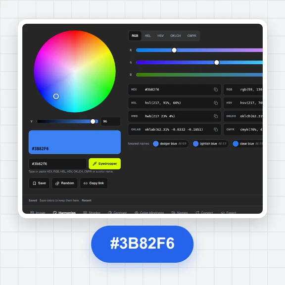
免费新的打开工具从色轮、屏幕或任何图片中选择一种颜色，并将其复制为 HEX、RGB、HSL、HSV、OKLCH 或 CMYK 格式
Free Color Picker | Pick colors from a wheel, your screen or an image, and get HEX, RGB, HSL, OKLCH and CMYK, palettes, contrast checks and code.
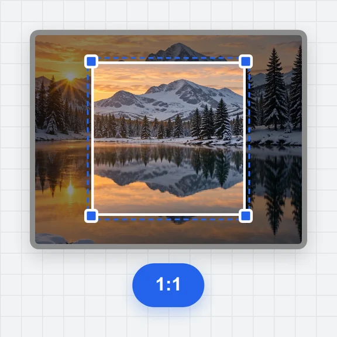
免费打开工具免费图片裁剪器
将裁剪框拖到您的照片上，选择一个形状，例如 1:1、4:3 或 16:9，然后下载结果
 免费打开工具
免费打开工具免费的 EXIF 移除工具
看看一张照片揭示了什么：相机、日期、拍摄的确切地点以及更多信息
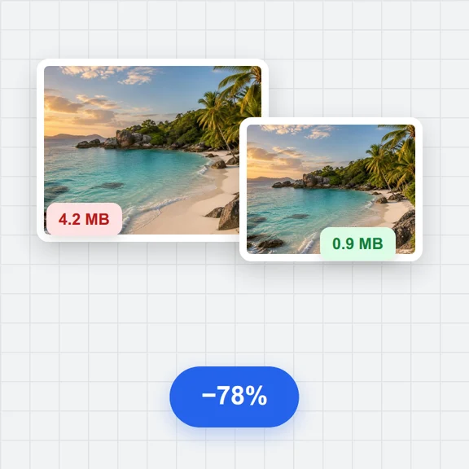
免费打开工具免费图片压缩器
减小单张图片或整个批次的文件大小
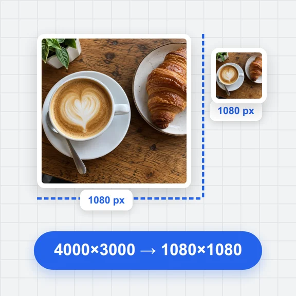
免费打开工具免费图片调整大小器
将一张图片或整个批次调整到您需要的大小
 图像放大器
图像放大器 免费打开工具
免费打开工具免费图片橡皮擦
从照片中移除人物、物体、文字和瑕疵：用画笔涂抹它们，人工智能会填充该区域以匹配周围环境
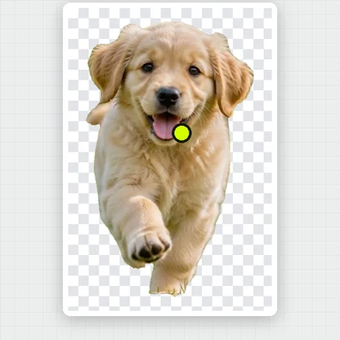
分割任何东西 免费新的打开工具
免费新的打开工具图像到提示 AI
拖放一张照片或艺术作品，并获得关于其主题、风格、灯光和颜色的详细提示
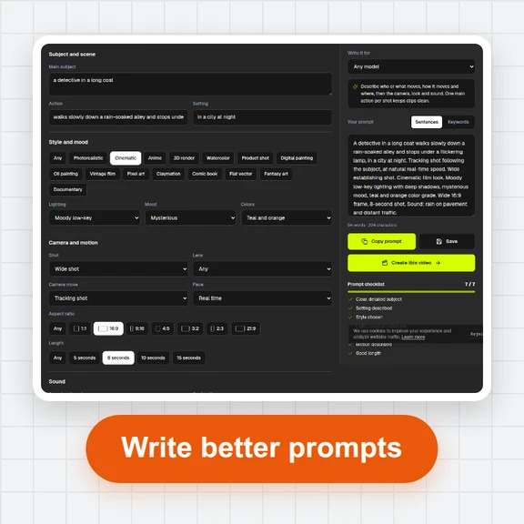
免费新的打开工具人工智能提示生成器
描述你的创意，选择风格、灯光、相机和动作，并在过程中获得一个完善的提示
 背景去除器
背景去除器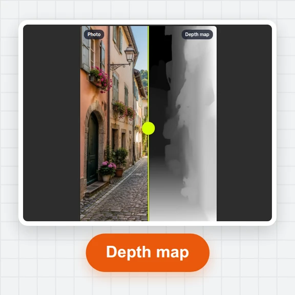
免费新的打开工具深度图生成器
AI 会估算你照片中每个像素的远近，就在你的浏览器中
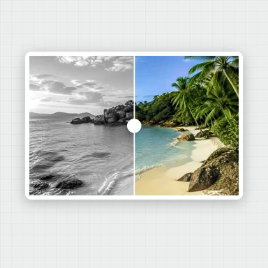
图像上色器 面部增强器
面部增强器 换脸
换脸 免费打开工具
免费打开工具免费 AI 图像检测器
检查文件的内容凭证和 AI 元数据，然后从在您的设备上运行的检测器获取 AI 生成的可能性
 免费打开工具
免费打开工具免费照片拼贴制作器
将你的照片排列成网格、马赛克、心形或自由散布的形式
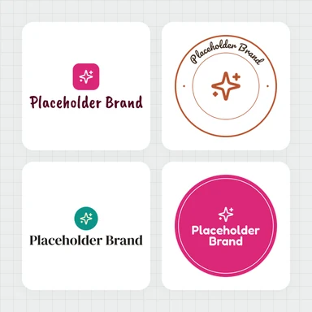
免费打开工具免费标志制作器
输入您的企业名称，选择一个图标、字体和颜色，然后从23种布局中选择：图标和名称、徽章、标志、字母组合和文字标记
 免费打开工具
免费打开工具免费护照照片制作器
将你的任何照片变成护照或签证照片：裁剪到官方尺寸和头部高度，背景为纯色
 免费新的打开工具
免费新的打开工具免费肖像美化器
柔软、均匀的肌肤，保持其真实质感，更明亮的眼睛、更白的微笑和一点化妆
 免费新的打开工具
免费新的打开工具免费人脸模糊
每张脸都会自动被识别，无论是特写镜头还是60人的人群，并可以通过模糊、像素化、纯色填充或磨砂玻璃进行隐藏
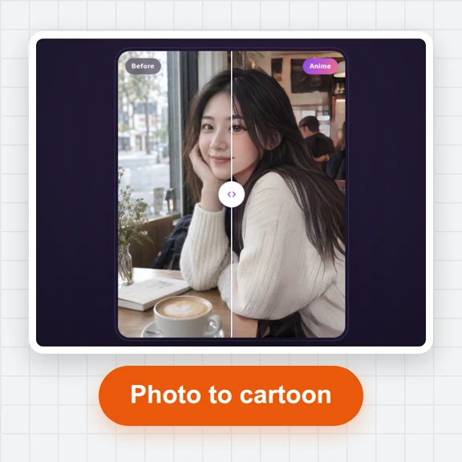
免费新的打开工具照片转漫画
选择一种风格，AI会将你的自拍、宠物或旅行照片重新绘制成卡通艺术作品，直接在浏览器中完成
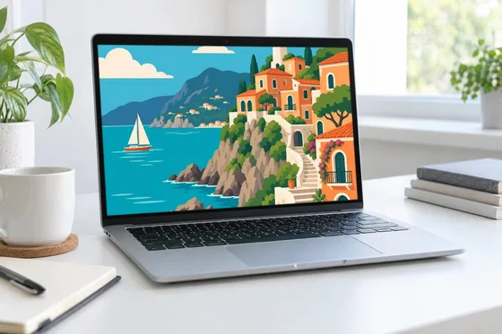
免费打开工具免费模型生成器
把你的设计放在手机、笔记本电脑、电视、海报、包、盒子、商店招牌和广告牌上
- 添加水印
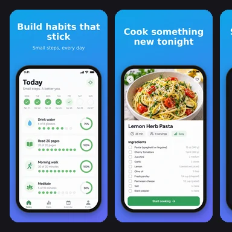
应用商店截图生成器 免费新的打开工具
免费新的打开工具免费在线自拍亭
启动你的网络摄像头，选择一个造型并按下快门：倒计时最多会连续拍四张照片
 免费新的打开工具
免费新的打开工具免费在线绘图应用
使用铅笔、墨水、马克笔、喷枪、水彩和像素画笔在图层上绘画，并可使用混合模式、不透明度和笔压
Video 19
 免费打开工具
免费打开工具免费视频压缩器
让视频更小，或让它们适合 Discord 的 10 MB 或邮箱的 25 MB
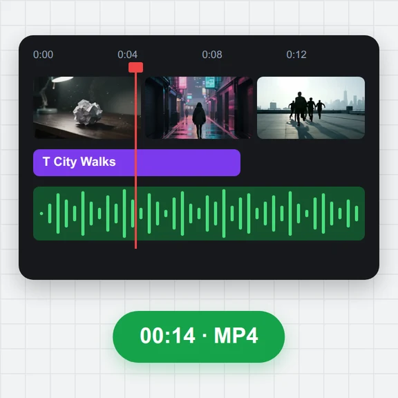
视频编辑器视频编辑器
一个真实的时间轴，就在你的浏览器中
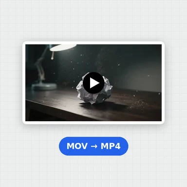
免费打开工具免费视频转换器
将视频转换为 MP4（H.264 或 H.265）、WebM、MOV 或 MKV，并选择其质量和分辨率
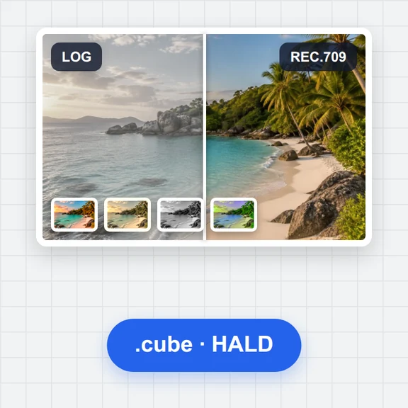
免费打开工具免费 LUT 生成器
在您的照片或视频上预览 55 个免费效果，使用色轮和曲线创建自己的效果，并导出 .cube、.3dl 或 HALD LUT
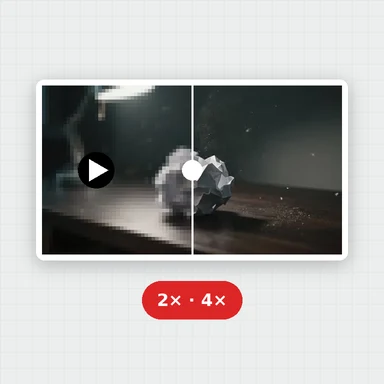
视频放大器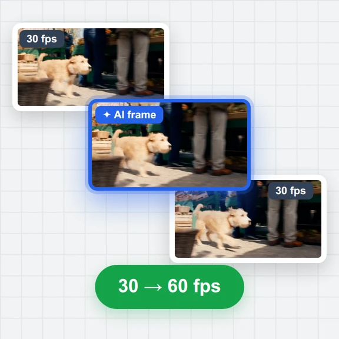
免费新的打开工具免费视频帧率提升器
AI 在你的剪辑的每两帧之间创建一个新帧，因此 24 帧每秒变为 48，30 变为 60，60 变为 120，速度保持不变，声音也保持不变
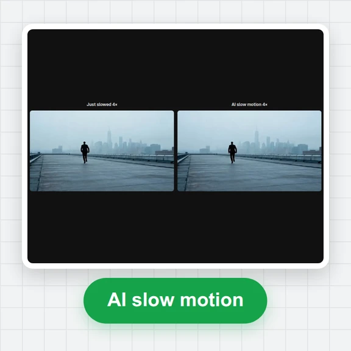
免费新的打开工具免费 AI 慢动作
人工智能在你视频的帧之间生成新的帧，所以一个片段播放速度是原来的2倍、4倍或8倍时仍然看起来流畅，而不是跳跃的
 合并视频和音频
合并视频和音频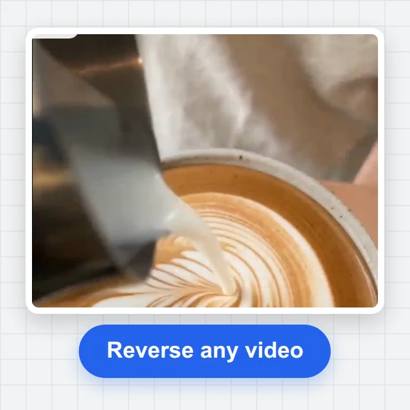
免费新的打开工具反转视频
将剪辑倒转以便倒放，或者制作一个来回播放的呼啦圈效果。声音也可以随之倒放
- 免费打开工具
免费视频转GIF转换器
在浏览器中将 MP4、MOV 和 WebM 视频片段转换为循环 GIF
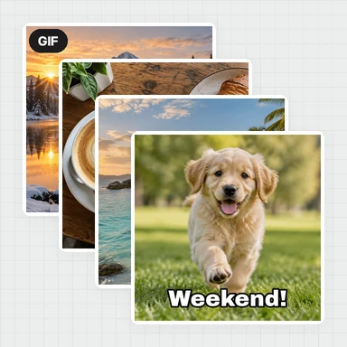
免费打开工具免费 GIF 制作器
在浏览器中将照片、绘画或截图转换为动画 GIF
 免费打开工具
免费打开工具免费字幕生成器
将任何视频或音频文件中的语音转成有时间标记的字幕，支持约100种语言
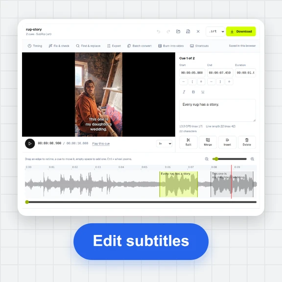
字幕编辑器 免费打开工具
免费打开工具免费屏幕录制器
录制你的屏幕、一个窗口或一个浏览器标签页，同时录制你的声音和摄像头画面
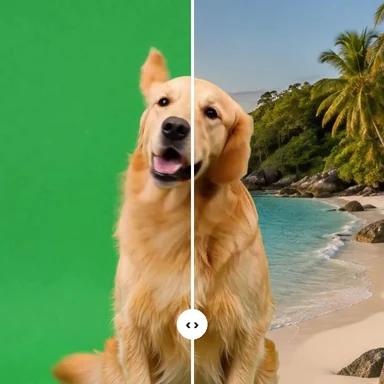
免费打开工具免费视频绿幕编辑器
从你的视频中移除绿色或蓝色屏幕，并实时查看效果
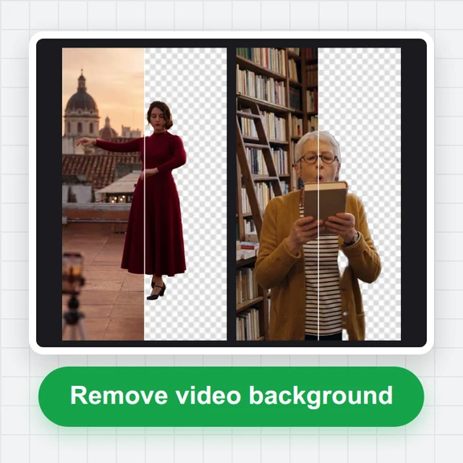
免费新的打开工具视频背景去除器
AI 在每一帧中找到人物，并将他们从背景中提取出来，就在你的浏览器中
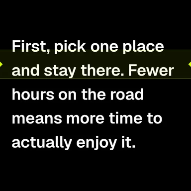
提词器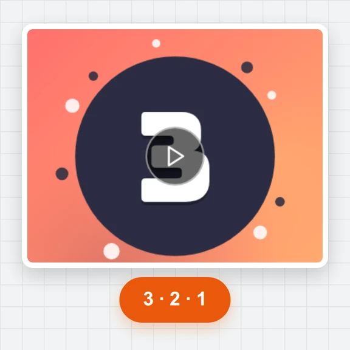
免费新的打开工具倒计时视频制作器
只需几次点击，就能制作一个10秒的开场、一个5分钟计时器或一个新年倒计时
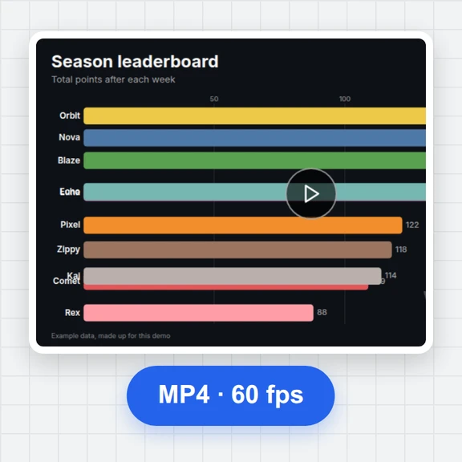
免费新的打开工具条形图赛跑制作器
粘贴一个表格或打开一个 CSV 文件，观看你的数据竞速：条形图增长、超越并攀升排名
音频与音乐 17
 免费打开工具
免费打开工具免费音频转换器
将任何音频文件转换为 MP3、M4A、OGG、FLAC 或 WAV，或从视频中提取声音
 免费打开工具
免费打开工具免费音频剪辑器
在波形上拖动开始和结束控制点，播放这一部分进行检查，然后添加淡入或淡出效果
 音乐创作器
音乐创作器音乐创作器
在你的浏览器中使用的节拍制作器、鼓机和迷你工作室
 免费打开工具
免费打开工具免费乐谱制作器
使用键盘输入音符，将它们点击到五线谱上或在钢琴键盘上演奏。添加歌词、和弦符号、力度记号、重复记号以及所需数量的乐器
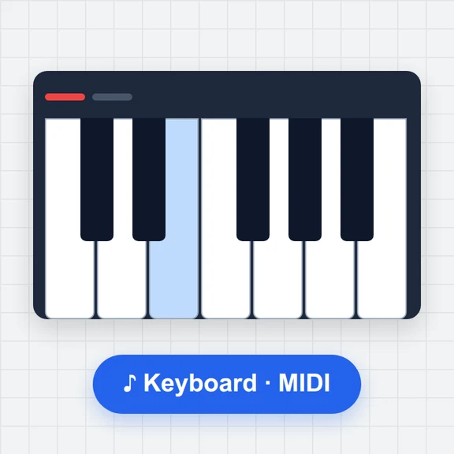
免费打开工具免费在线钢琴
用你的电脑键盘、鼠标、触摸屏或MIDI键盘演奏，配有延音踏板，并提供从三角钢琴到风琴的八种音色
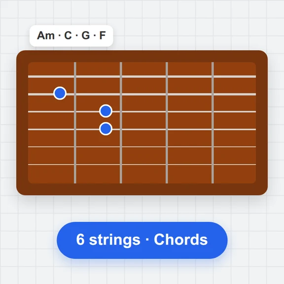
免费打开工具免费在线吉他
在琴弦上拖动以扫弦，按下品格以弹奏音符，并从任何调音中选择超过一千种和弦形状
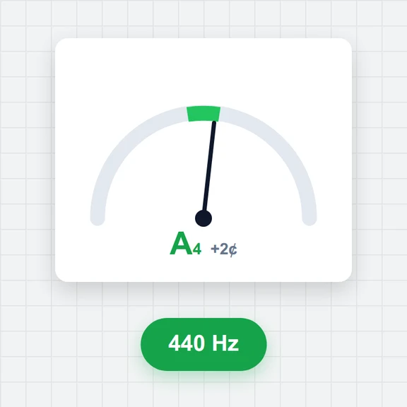
免费打开工具免费在线调音器
对着麦克风演奏一个音符，然后在指针或频闪仪上查看它与正确音高相差多少分音
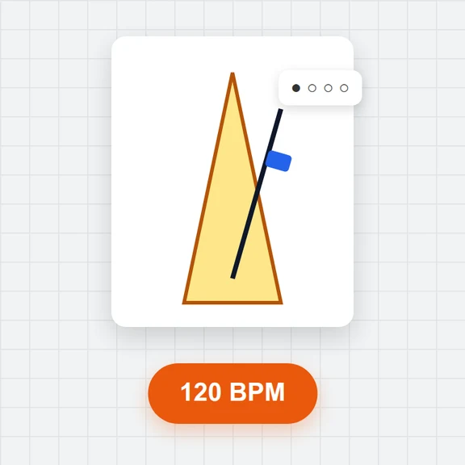
免费打开工具免费的在线节拍器
设置一个 20 到 400 BPM 的速度，选择一个拍号，并强调你想要的节拍，可加上切分、摇摆和复拍节奏
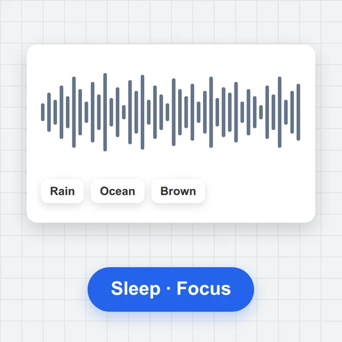
免费打开工具免费白噪声生成器
播放白噪声、粉噪声、棕噪声及其他噪声类型，或雨声、海浪声、风声、溪流声、壁炉声和夜晚蟋蟀声，并根据喜好混合它们
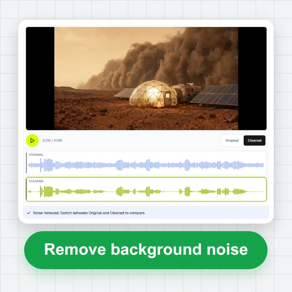
噪音消除器 响度计
响度计- 免费打开工具
免费语音转文本
将面试、讲座、会议和语音备忘录转化为文本，约支持100种语言
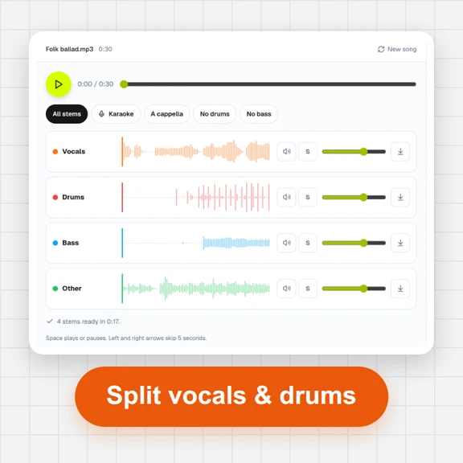
人声去除器 免费打开工具
免费打开工具免费 AI 音乐检测器
检查文件的标签以查找已知的 AI 音乐生成器，然后使用检测器从你设备上的声音中获取 AI 生成的可能性
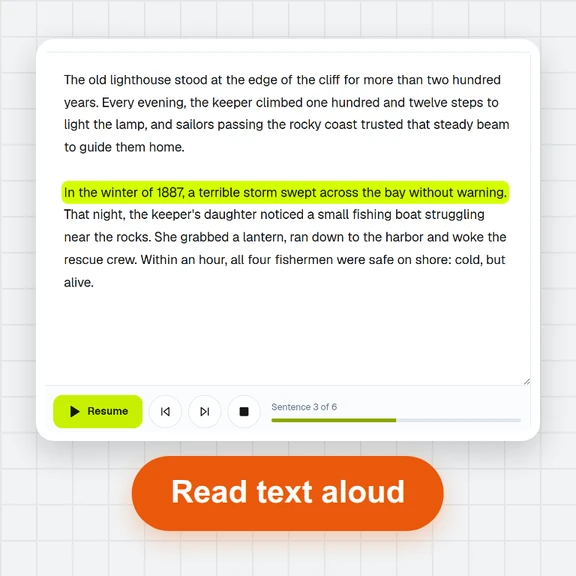
免费打开工具免费文字转语音
粘贴文本或打开文档，并通过自然发声的 AI 语音朗读，每句话在朗读时都会被高亮显示
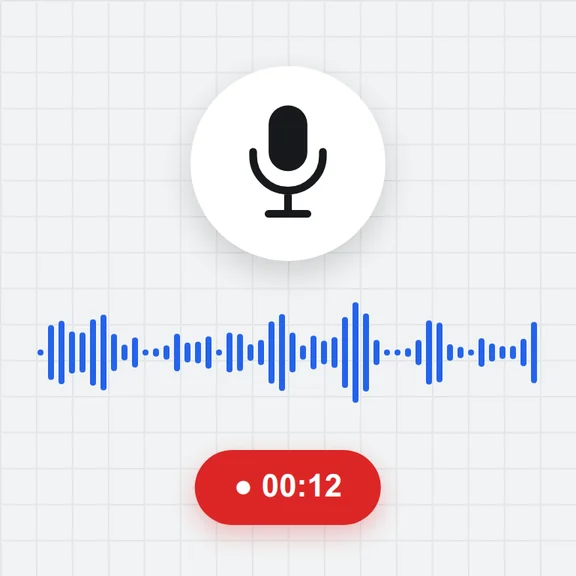
录音机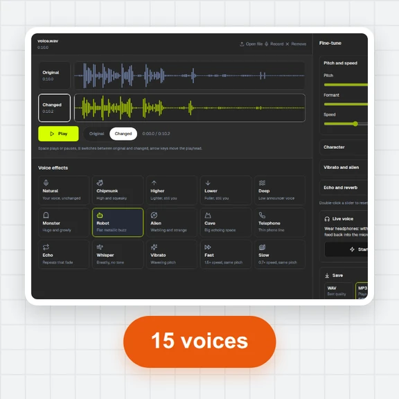
免费新的打开工具免费语音变声器
录制你的声音或打开任何音频或视频文件，然后从15种语音效果中选择，或通过音高、共振峰、速度、回声和混响自行调整
PDF 24
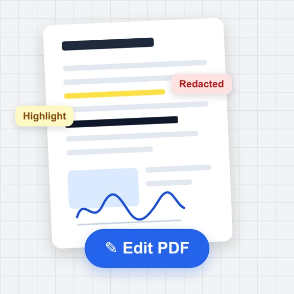
免费打开工具免费 PDF 编辑器
添加文本、图片、形状和您的签名，修改现有文字，高亮显示，填写表格，遮盖必须保密的内容，并整理页面顺序
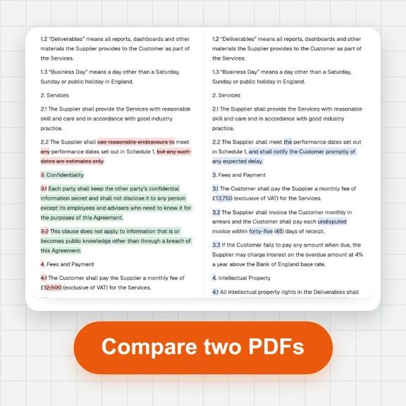
比较文档比较文档
查看两个版本之间的所有更改
- PDF 转 Word
PDF 转 Word
在浏览器中可编辑的 DOCX，免费
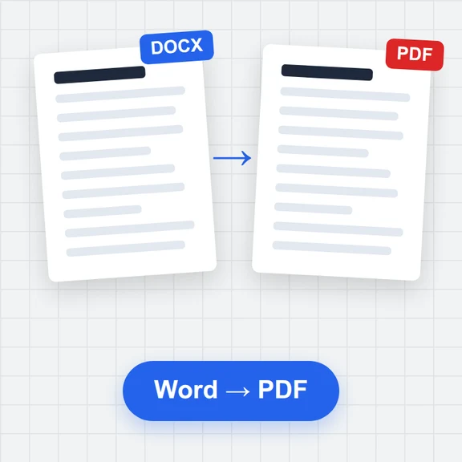
Word 转 PDFWord 转 PDF
在浏览器中将 DOCX 转为 PDF，免费
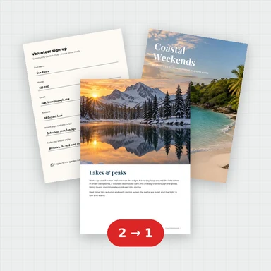
合并 PDF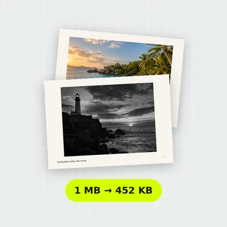
压缩 PDF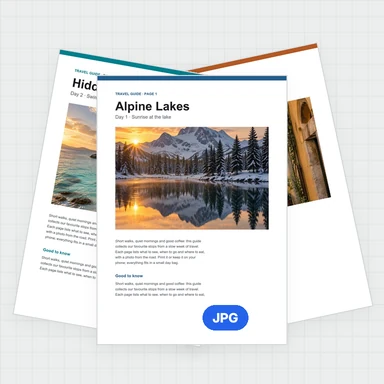
免费打开工具免费的 PDF 转 JPG 转换器
将 PDF 页转换为 JPG、PNG 或 WebP 图像，并选择您希望的分辨率
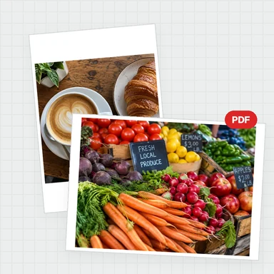
免费打开工具免费图片转PDF转换器
将 JPG、PNG 及其他图片按您选择的顺序合并为一个 PDF
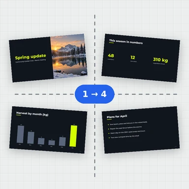
拆分 PDF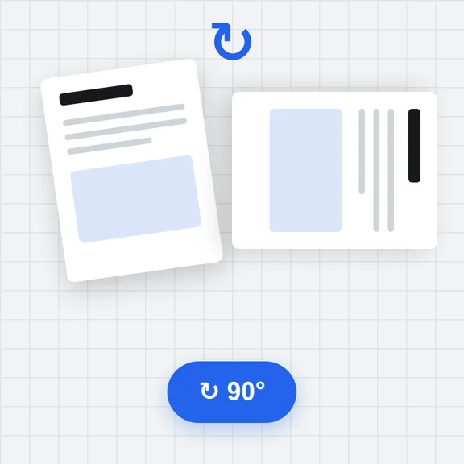
旋转 PDF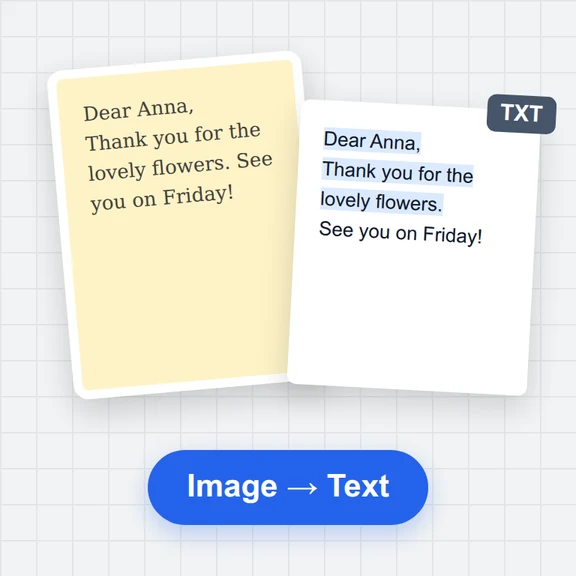
光学字符识别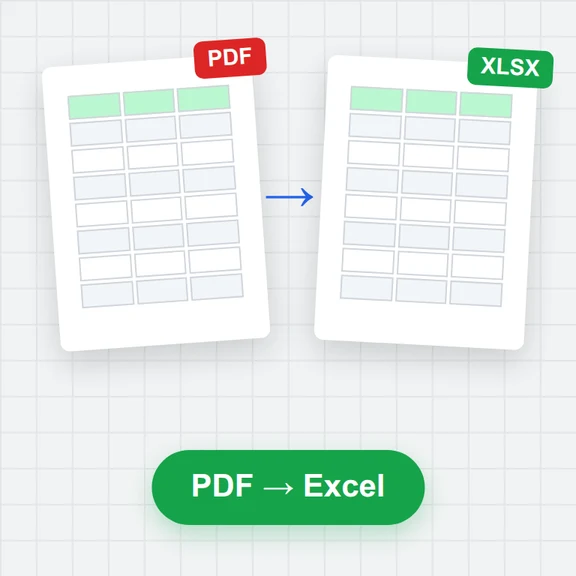
PDF 转 Excel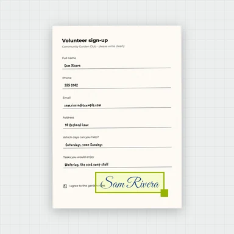
签署 PDF- 编辑 PDF
- 免费新的打开工具
PDF 预检
检查字体、图像分辨率、颜色、出血和页面框线、细线、小字体、透明度等，每个问题都会在页面上标出
- 贝茨编号
- HTML 转 PDF
- 文本转PDF
- CSV 转 PDF
- Excel 转 PDF
- PDF 转换为 PowerPoint
- 解锁 PDF
- PDF 阅读器
- PDF 排版
商务与写作 8
- 银行对账单转换器
银行对账单转换器
将 PDF 对账单转换为 Excel、CSV、QBO 和 OFX
- 免费打开工具
免费发票生成器
填写您的企业、客户和项目：总额、税款和应付余额会在您输入时精确计算，并显示在页面的实时预览旁边
- 免费新的打开工具
发票扫描器
总额和分项会相互核对，因此你可以看到在记录入账之前需要检查的内容
- 免费打开工具
免费简历生成器
填写您的详细信息，并在输入时观看页面更新，使用十种模板之一，这些模板既适合人类阅读，也适合申请追踪系统阅读
- 免费打开工具
免费文档翻译器
将 Word 文档、PowerPoint 幻灯片、Excel 表格、PDF 和文本翻译成 50 多种语言。标题、加粗文本、链接、表格和图片保持原位
 免费打开工具
免费打开工具免费字数统计器
粘贴或输入文本即可立即查看字数、字符、句子、段落和阅读时间
- 免费打开工具
免费 Markdown 编辑器
使用普通 Markdown 编写，并在旁边查看其呈现效果：表格、任务列表、脚注、带颜色的代码、LaTeX 数学公式和 Mermaid 图表
- 免费打开工具
免费语法检查器
输入或粘贴英文文本，在书写时查看拼写、语法、标点和风格建议
开发者工具 13
- 免费新的打开工具
在线 Python 编译器
输入 Python，按运行并查看输出，带有真实的 input() 提示和清晰的错误信息
- 免费新的打开工具
在线代码运行器
编写代码，按运行并立即查看输出：控制台日志、表格、带行号的错误
 免费打开工具
免费打开工具免费密码生成器
只需一键即可生成随机密码或词语密码短语：选择长度、字符以及所需数量
- 免费打开工具
免费 JSON 格式化器
粘贴 JSON 或打开文件以检查它、美化它或压缩它。错误会显示其行号和列号
- 免费打开工具
免费数据格式转换器
在八种格式之间转换配置文件和数据，并确切地查看文件损坏的位置
- 免费打开工具
免费 Base64 编码器和解码器
将文本编码为任何常见字符集，或将文件转换为 Base64 或可直接粘贴的数据 URI
- 免费打开工具
免费 URL 编码器和解码器
编码单个值或整个 URL，然后解码回来，看看究竟哪个转义出错了
- 免费打开工具
免费哈希生成器
一次使用23种算法对任意大小的文本或文件进行哈希，从MD5和SHA-256到SHA-3、BLAKE3和xxHash
- 免费打开工具
免费 UUID 生成器
创建一个 ID 或 10,000 个，格式按照你的代码或数据库所期望的方式
- 免费打开工具
免费正则表达式测试器
输入一个模式和一些文本：每次匹配都会在你输入时点亮，其捕获组显示在表格中
- 免费打开工具
免费 SQL 格式化器
粘贴查询或打开 .sql 文件，并将其整齐缩进，关键字、字符串和注释带有颜色
- 免费打开工具
免费 JWT 解码器
粘贴一个令牌以查看其头部和声明，以及作为实际日期的到期和发行时间
- Unix 时间戳转换器
数据、地图与科学 6


计算器与计时 20
- 免费新的打开工具
免费在线计算器
使用大按键或键盘进行加、减、乘、除运算，并将每一个计算结果保存在可以复制的打印纸上
- 免费打开工具
免费贷款计算器
输入金额、利率和期限以查看您的付款、总利息以及贷款何时还清
- 免费新的打开工具
免费货币转换器
输入金额，选择两种货币，即可立即查看结果，并显示双向汇率
- 免费打开工具
免费百分比计算器
用完整的句子填写数字——80的15%是多少，30占120的百分之几，从50到65的变化是多少——并立即读出答案
- 免费打开工具
免费年龄计算器
输入出生日期，即可查看精确的年龄（年、月、日）、总共生活的天数以及到下一个生日的倒计时
- 免费新的打开工具
免费薪资计算器
输入你在任意周期的薪资，以查看每小时、每天、每周、每两周、每月和每年的收入，包括加班和无薪假期
- 免费新的打开工具
免费热量计算器
输入您的年龄、身高、体重和活动量，以获取您的基础代谢率 (BMR)、维持热量（TDEE）以及按照您选择的速度减重、维持体重或增重的每日目标
- 免费打开工具
免费BMI计算器
请输入您的身高和体重（公制或美制单位），以查看您的BMI、其分类以及您身高对应的健康体重范围
- 免费打开工具
免费科学计算器
输入或点击带有括号、函数和常量的完整表达式，并在输入时查看结果
- 免费新的打开工具
数学求解器
解算术、分数、方程、系统、不等式、因式分解、导数、积分、极限、级数和矩阵
- 免费新的打开工具
免费图形计算器
像书写那样输入方程——y = 2x + 1，x² + y² = 25，r = 2cos θ——然后在输入时观看它们被绘制出来
- 免费打开工具
免费 GPA 计算器
输入你的课程、成绩和学分，以查看你的4.0 GPA，包括加减分等级
- 在线计时器
- 秒表
 转动轮盘
转动轮盘 随机数生成器
随机数生成器- 世界时钟
- 番茄钟
 抛硬币
抛硬币- 掷骰器
白板与图表 3


游戏与学习 19
 免费打开工具
免费打开工具扫雷
清除地雷而不触碰地雷。第一次点击总是安全的
 2048
20482048
滑动、合并，达到2048
- 免费打开工具
纸牌接龙
拖动卡片或直接点击它们；它们会跳到最佳位置
 贪吃蛇游戏
贪吃蛇游戏贪吃蛇游戏
吃，成长，不要咬自己的尾巴
 免费新的打开工具
免费新的打开工具在线弹珠台
拉动推杆，用屏幕的左右两侧或键盘翻转，并尽可能长时间保持球的存活
- 免费新的打开工具
沙画
选择一种颜色，然后触碰玻璃，通过漏斗倒入细沙。叠加条纹，堆砌小山，在层中旋转波纹
- 免费新的打开工具
雪景球
一个玻璃球，里面有一个微型冬季世界。拖动它、轻触它或摇动你的手机，雪花就会旋转上升，然后慢慢飘落下来
- 免费新的打开工具
泡泡射手
在硅胶风格的爆泡板或一张新的气泡膜上轻拍光滑的泡泡，感受每一次爆裂
- 免费新的打开工具
指尖陀螺
用手指或鼠标轻轻拨动陀螺，观察它在平滑、逼真的轴承物理作用下旋转
 免费打开工具
免费打开工具数独
每个谜题都有且只有一个解，并且根据所需的技巧进行评级。记笔记，撤销任何操作，并请求一个解释下一步的提示
 方块拼图
方块拼图- 免费新的打开工具
猜词游戏
输入一个单词，格子会显示哪些字母在答案中以及哪些字母在正确的位置上
- 免费打开工具
打字测试
进行一次15秒到2分钟的测试，输入一段文字或你自己的文本，查看你的速度、准确性以及拖慢你的按键
- 免费打开工具
国际象棋
从初级到高级选择一个水平，或者把设备传给朋友
- 免费打开工具
元素周期表
点击任意元素以查看其原子量、电子排布、熔点和沸点、同位素、玻尔模型等信息
- 免费新的打开工具
虚拟壁炉
点燃一个舒适的火炉，享受实时火焰、闪烁的余烬、飞舞的火花以及轻柔的劈啪声背景音
- 免费新的打开工具
观看柔软的蜡块在发热的玻璃灯中升起、融合、融化并缓缓下落
A relaxing glowing lava lamp: pick shapes and colours, go full screen as a screensaver and save loop videos.
- 免费新的打开工具
弹跳徽标屏保
经典屏幕保护程序，属于你的：输入任意文本或添加你的标志，观看它在每面墙上滑动、弹跳并变色
- 免费新的打开工具
窗上的雨
雨滴在窗户上聚集、滑动并融合，每一滴都是一个小小的透镜，映出背后的晚灯
3D 打印、CAD 与电子 6


手工与激光 3

二维码、条码与字体 3
设备测试 6

模拟器与仿真 21
- 免费新的打开工具
输入网站地址或粘贴您的 HTML，并以真实手机、平板、笔记本和台式机屏幕大小的框架查看，或并排显示，或一次显示一个
See a website or your HTML at phone, tablet and desktop screen sizes side by side.
- 免费新的打开工具
CHIP-8 模拟器
播放33款公共领域的CHIP-8、SUPER-CHIP和XO-CHIP游戏，或打开你自己的.ch8文件
- 免费新的打开工具
Arduino 模拟器
在模拟的 ATmega328P 上实时运行已编译的草图 (.hex) 或十个示例之一
- 免费新的打开工具
6502 模拟器
输入 6502 汇编并按运行：它会在 32×32 彩色屏幕上组装并运行，并支持键盘输入
- 免费新的打开工具
逻辑电路模拟器
用门电路、开关、时钟、触发器、LED 和七段显示器构建数字电路，然后拨动开关并启动时钟，观察每一根电线亮起
- 免费新的打开工具
RISC-V 模拟器
使用带有标签和伪指令的 RV32IM 汇编，然后全速运行或逐条指令执行
- 免费新的打开工具
8 位主机播放器
从库中选择一款游戏，并使用键盘、游戏手柄或触控按钮在此处玩游戏
- 免费新的打开工具
复古掌上模拟器
在经典的8位掌上游戏机上试玩由独立开发者制作的免费、开放许可游戏库
- 免费新的打开工具
电脑模拟器
一个完整的 x86 个人电脑在此页面内运行：选择一个系统，它会在几秒钟内启动，配备键盘、鼠标、屏幕和声音
- 免费新的打开工具
Pico 模拟器
编写 MicroPython，按下运行并观察 LED 闪烁，读取按钮和旋钮，并在其 REPL 中与板子对话
 免费新的打开工具
免费新的打开工具下落沙模拟器
倒入沙子、水、油、熔岩、火、酸、冰、种子等，观察它们流动、燃烧、冻结、成长和爆炸
- 免费新的打开工具
弹珠赛赛道制造者
输入最多100个名字，选择七条赛道中的一条或随机选择，然后按开始
- 免费新的打开工具
弹跳球模拟器
将球投入旋转的环、多边形和收缩的圆圈中。每一次弹跳都会发出一个音符，分裂一个球或打破一个环
- 免费新的打开工具
布偶玩耍场
真正关节可动的布娃娃，你可以拖动、甩动并放到蹦床、斜坡和跷跷板上
- 免费新的打开工具
重力与轨道模拟器
通过拖拽放置新的恒星、行星和卫星，实时观察轨迹、能量和动量，并将结果导出为带声音的竖屏、方形或宽屏视频剪辑
 免费新的打开工具
免费新的打开工具Plinko 模拟器
把一个球或一万个球从钉板上掉下来看它们如何堆积成钟形曲线，精确的二项分布和拟合的正态曲线会画在槽上
- 免费新的打开工具
风中的旗帜、窗帘、吊床、网、摆动的链条和摇晃的果冻——所有这些都是你可以触碰的实时物理效果
Grab, cut, pin and tear cloth, ropes, chains and jelly with wind and obstacles, then export an MP4 clip.
- 免费新的打开工具
在画布上拖动以旋转彩色烟雾和墨水，为它绘制墙壁让其流动，或倾斜一桶水
Stir real-time smoke, ink and water, draw walls, tilt the tank and export the result as an MP4 clip with sound.
- 免费新的打开工具
多米诺骨牌连锁反应模拟器
在桌子上画线条、曲线、螺旋和整片多米诺骨牌，或者用球、斜坡、跷跷板、摆锤和铃铛建造一个侧视的机器
- 免费新的打开工具
生命游戏
对经典蜂窝自动机的一种平静而美丽的演绎：绘制、放置著名的图案，并观察滑翔机、振荡器以及整个群落的展开
- 免费新的打开工具
群体模拟器
黄昏时的椋鸟、一群鱼、发光的萤火虫：看简单的规则如何变成令人着迷的旋涡
常用任务快捷入口
这些也在你的浏览器里完成
无需注册即可试用，游客每日 3 次免费。所有处理都在你的设备上完成，文件不会被上传。
- 490 个免费工具
- 图片 · 视频 · PDF · 文本
- 每日免费额度
所有工具每天都有免费额度。 游客每日 3 次免费，注册再送 20 积分。文件不上传，处理全在你的设备上完成。